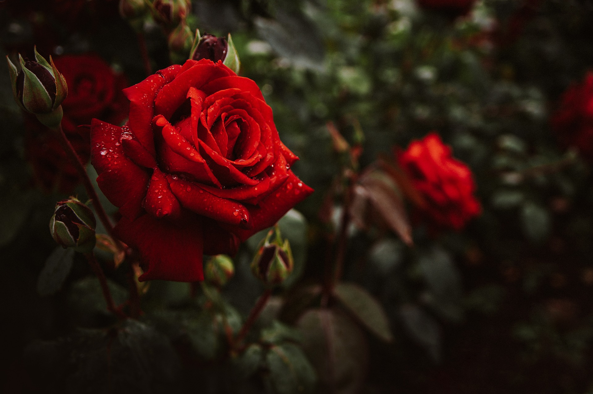
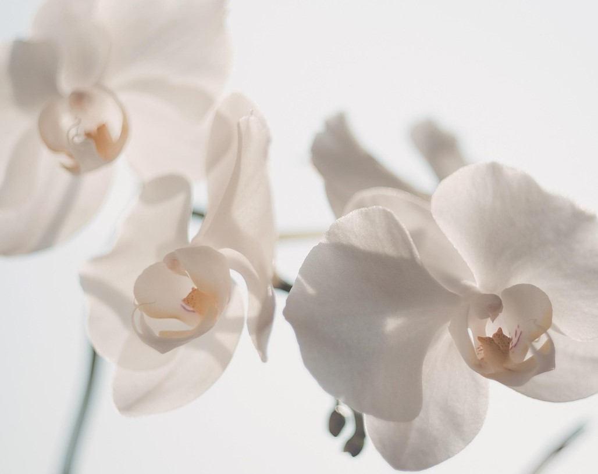

Rosas vermelhas:
A rosa é a flor de maior simbolismo na cultura ocidental.
Orquídeas brancas:
A orquídea branca é a representação de elegância e sofisticação.
Lírios:
O lírio é conhecido por ser uma planta que se adapta super bem em climas frios.

